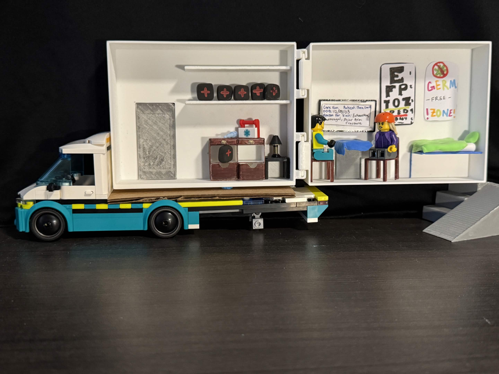
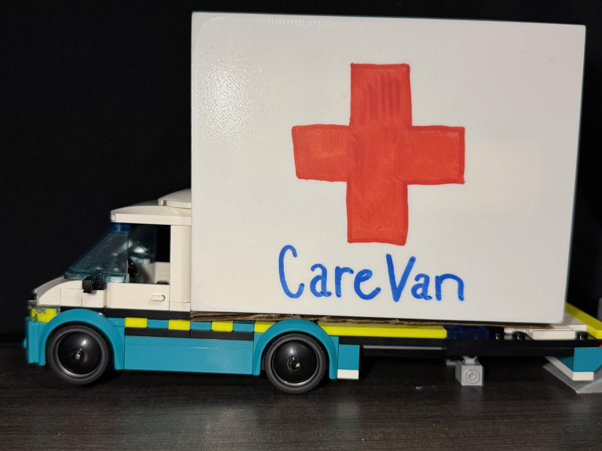

Healthcare Concept / 3D Modeling / Stop Motion
CareVan
A mobile clinic concept brought to life through a physical model, 3D printed details, and a stop-motion video that explains the care journey.

Snapshot
A physical service prototype that makes a mobile clinic easier to imagine.
Mobile clinic concept
3D Modeler + Fabricator + Stop-Motion Designer
3D modeling, 3D printing, miniature clinic details, video storytelling
CareVan model, printed components, interior scene, stop-motion process video
Concept frame
The model needed to show both service access and the feeling of care.

From my angle, CareVan became a storytelling challenge: how can a small physical model communicate a healthcare service, not just a vehicle? I focused on the model as a way to make the concept tangible, understandable, and emotionally approachable.
Build process
I translated the service idea into a model that could open, stage, and move.
Model the clinic space
I worked on the 3D modeling for the CareVan structure and interior details so the service could be seen as a real environment instead of a flat concept.
Print and assemble
I 3D printed prototype elements and helped assemble the clinic scene, including small care objects that make the model readable at a glance.
Animate the journey
I created the stop-motion video direction so the physical model could explain a sequence of service moments, not just sit as a static display.
Prototype details
The open model makes the care experience visible in one scene.
Stop-motion storytelling
The video prototype turned the model into a service journey.
The van becomes the first touchpoint: visible, mobile, and easy to identify.
The model reveals the interior, making the healthcare service feel concrete.
Figures and props show how a patient could receive support inside the mobile clinic.
Outcome
A model-based prototype that helped people understand the service quickly.
CareVan became more persuasive through physical prototyping. My contribution was turning the idea into an object people could inspect: modeling and printing the parts, assembling the clinic environment, and using stop motion to show how the concept could unfold over time.
Reflection
Physical prototypes can make service design feel immediate.
This project helped me practice communicating a healthcare concept through scale, layout, and tangible detail. The model had to be clear enough for viewers to understand the clinic environment without a long explanation.
The stop-motion work also made me think about pacing and sequence. In service design, showing what happens first, next, and after can be just as important as the final object.